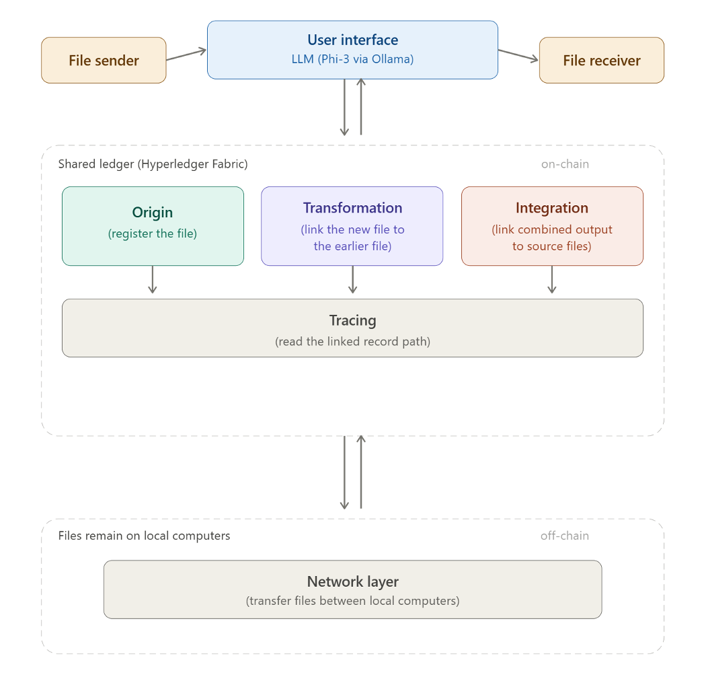
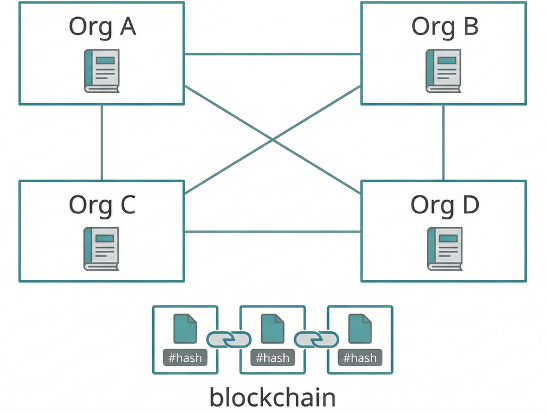
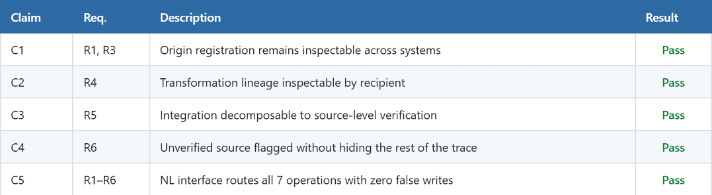
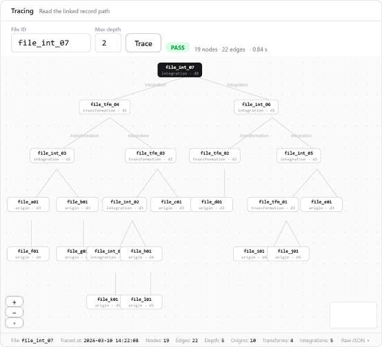
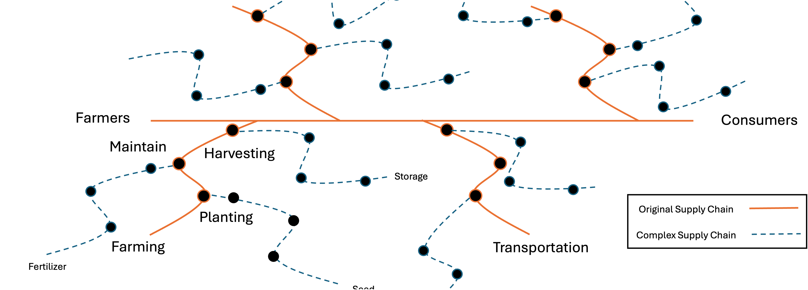
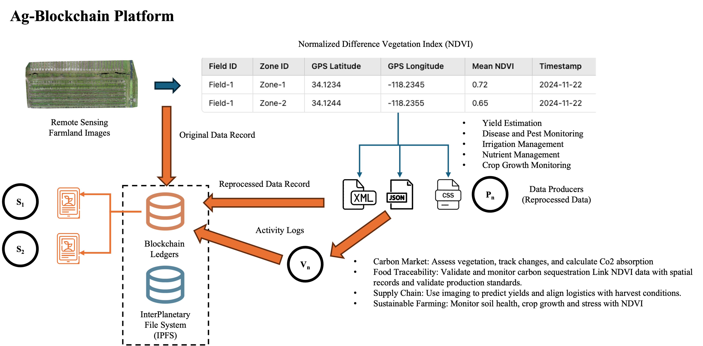
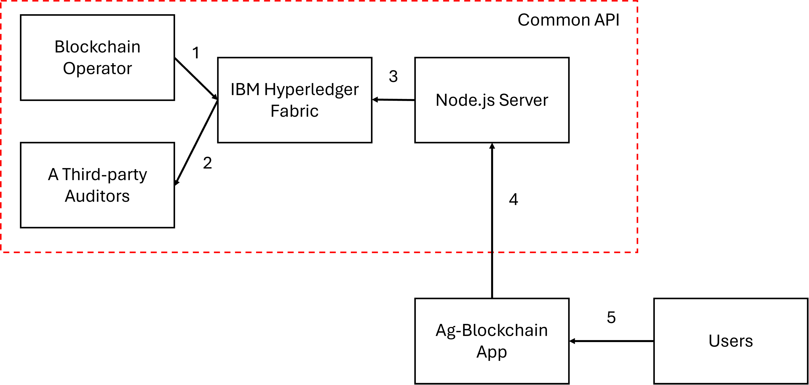
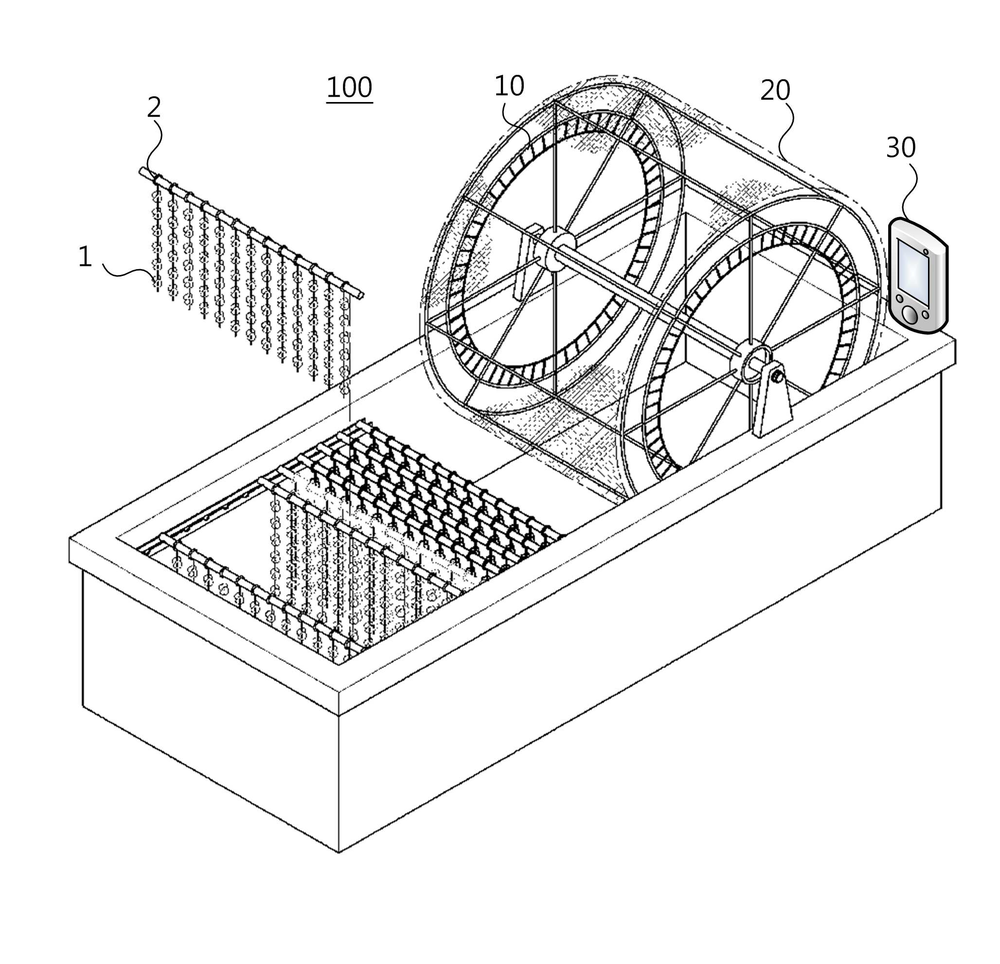
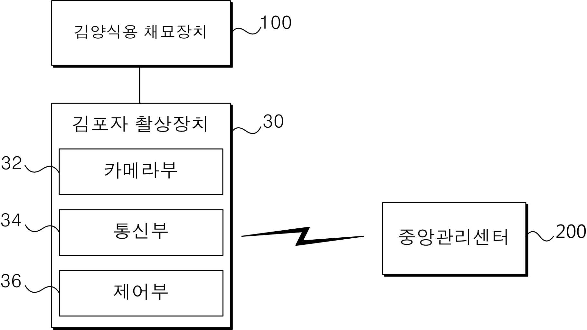
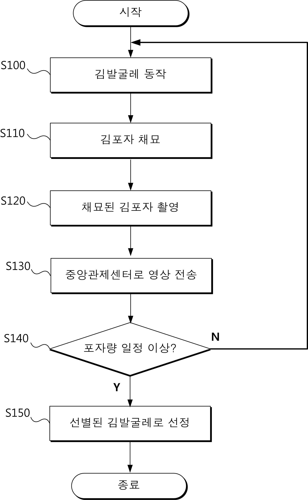

University of Florida
2022 – 2026Ph.D. in Agricultural and Biological Engineering · GPA: 3.95/4.0
I come from a family of educators and farmers. My grandfather, my mother, and my extended family have spent their careers in education. Our family also runs a farm and a smart agriculture and aquaculture IT company. Growing up between these two worlds, teaching and feeding, I learned early that the work worth doing is work that helps other people.
My father, a first-generation computer engineer with a Ph.D. in environmental engineering, showed me early how technology applies to real-world systems. Through his work leading a smart agriculture and aquaculture IT company, I saw how AI was beginning to change food production. That pulled me from a general curiosity about the brain into a specific one: how computers learn from data. I studied computer science, built vision systems that automate feeding and growth monitoring in fish farms, and kept asking the same question, if the AI works, what happens to the data it depends on?
The answer led me to infrastructure. Agricultural data crosses farms, labs, advisors, and regulators, but once a file leaves one system, its history is lost. No one downstream can confirm where it came from or what happened to it. I spent the next four years building DEMETER, a platform that lets organizations share data while keeping a verifiable, traceable record that no single party controls, and the independent research behind each layer: who registered the file, what was done to it, and how it was shared.
Eleven years in, the thread has not changed. I build systems that solve real data problems, and now that the skills are ready, I am looking for roles where I can lead that work: finding the hard problems, building what is needed, and making it useful to the people who depend on it. I am grateful to every advisor, mentor, and community that made this path possible.
| Languages | Python, C++, Go, JavaScript, C, Java, R |
| Backend & APIs | Node.js, Express, REST APIs |
| AI & Vision | YOLO, SAM, OpenCV, Machine Learning, LLM Integration |
| Distributed Systems | Hyperledger Fabric, Blockchain Systems |
| Data & Cloud | AWS, Azure, CouchDB, Firebase |
| Frontend | Next.js, React, TypeScript |
Ph.D. in Agricultural and Biological Engineering · GPA: 3.95/4.0
B.S. in Computer Science, Minor in Mathematics · GPA: 3.8/4.0
University of Florida · Agricultural and Biological Engineering
Conduct doctoral research on data infrastructure, provenance, and verification systems. Develop prototypes, manuscripts, and reproducible documentation. Designed and built DEMETER platform end-to-end.
Ministry of Agriculture, Food and Rural Affairs (MAFRA), South Korea
Contributed to comparative studies of crop mechanization and digital agriculture development between South Korea and the United States.
Billion21
Contributed to AI and computer vision development for marine production and smart aquaculture systems. Built YOLO-based feeding analysis and SAM-based size estimation systems.
Global BioAg Linkages
Evaluated technical and data requirements for AI deployment in agricultural production systems.
Texas Tech University
Supported research projects in computer vision and data visualization.
Gyeonggi Nambu Provincial Police Agency, South Korea
Personnel and training administration. Recognized at the 74th National Police Day ceremony.
Agricultural data has significant value for farm decisions, environmental assessment, and regulatory compliance. But sharing data across independent organizations rarely happens, because no organization can confirm where an outside file came from. A central database would solve this, but no single organization has the infrastructure to collect and maintain all agricultural data. Files get sent directly, and the moment a file leaves one system, its history is lost.
DEMETER records file history on a shared blockchain while files remain on each organization's local system. Three layers handle what is lost when files cross boundaries: where a file came from (origin), how it was changed (transformation), and how it was shared (integration). A natural language interface lets users query and write records through plain-text commands.

I designed and built the full system end-to-end.

| Chaincode | 3 Go contracts, 19 exported functions (Dataset, Transform, Reuse) |
| Backend API | 37 REST endpoints across 8 route modules (Node.js/Express) |
| Frontend | 7 pages (Next.js 15, TypeScript, React Flow for provenance graphs) |
| NLQ | 15 intents, deterministic routing + Phi-3 LLM fallback via Ollama |
| DID Auth | ECDSA P-256 key pair, Web Crypto API, challenge-response |
| Local Agent | Watches a folder, auto-detects provenance type, registers on-chain |
| Deployment | Hyperledger Fabric v2.5, Docker Compose, Raft ordering |
5 claims tested across 4 independently operated systems. All requirements (R1–R6) confirmed under functional and failure conditions.


DEMETER is a general-purpose bottom layer. Current applications in progress: soil spectrum and mapping data, fresh food to waste management, and smart aquaculture with edge computing. Future work includes pagination-based tracing beyond 8,000 records and AI agent interfaces for automated verification workflows.
Code: github.com/WhoisHOO/DEMETER (private during review)
Sourced by: Cho, Y., Yu, Z., & Ampatzidis, Y. DEMETER: A Blockchain-Based Platform for Tracking the History of Shared Agricultural Data Files. Under review.
Users interacting with a blockchain-based data system should not need to learn API endpoints or command syntax. But agricultural data sharing does not require deep reasoning from an LLM, it requires accurate intent classification and correct routing to the right operation.
A natural language interface that classifies user input into 15 intents and routes each to the correct DEMETER operation. Deterministic keyword matching handles known patterns; Phi-3 (3.8B) via Ollama handles the rest, running locally with no external API dependency.
Keyword router checks input against predefined patterns first. If no match, the query falls through to Phi-3 for intent classification. A write confirmation gate prevents unintended ledger modifications, any operation that writes to the blockchain requires explicit user approval.
74-case evaluation suite covering all 15 intents and edge cases. 100% routing accuracy. Zero false writes confirmed.
Existing blockchain frameworks store static data references (e.g., IPFS hashes) on-chain. Every transformation generates a new hash, fragmenting the traceability chain and increasing storage redundancy. Agricultural image files, such as drone TIFF and satellite imagery, are large and frequently transformed through NDVI analysis, yield estimation, and crop growth monitoring. Current models cannot handle this volume without excessive on-chain storage.

A scalable traceability framework that applies DV-TI infrastructure to citrus drone imagery from Immokalee, FL. Instead of logging every transformation as a new on-chain entry, a dynamic hashing ID mechanism updates when data is transformed, maintaining continuous traceability while reducing storage overhead. IPFS handles large file storage off-chain; the blockchain stores only IDs and metadata.

Smart contract logs every data interaction: uploads, access requests, transformations, downloads, and usage events. Each interaction generates a unique hashing ID that optimizes transaction speed and prevents redundant on-chain storage. Tested using citrus farm imagery applying predefined criteria: data type, size, timestamp, and geolocation.
All user activities successfully recorded on-chain with timestamps, user IDs, and access roles converted into secure hash values. The hashing ID update mechanism significantly reduced redundant storage compared to conventional blockchain-IPFS models, confirming the system handles real-world scalability demands while preserving data integrity.
A common Ag-Blockchain API enabling data transformation and interoperability across farm management, food traceability, and sustainability applications. Zero-Knowledge Proofs (ZKP) to verify and track off-chain data modifications while maintaining privacy.

When multiple files from different organizations are combined into a single output, the downstream party cannot determine which source files contributed or under what license conditions they were shared.
An infrastructure that governs how files move between organizations and how combined outputs relate back to their sources. Records every access request, approval, transfer, and reuse decision on-chain.
Access request workflow: Request, Approve, Fulfill, Download. Reuse evaluation checks purpose against 7 Creative Commons license types. Expiration enforcement and derivative restrictions. Decision chain tracing audits who approved what and when.
Code: github.com/WhoisHOO/demeter-si-infrastructure (private during review)
Sourced by: Cho, Y., Yu, Z., & Ampatzidis, Y. Under review.
When a file is transformed into a new file (e.g., raw sensor data into a loss appraisal), the new file has different content and a different fingerprint. The downstream party cannot determine which input was used or what operation was performed, because that information exists only inside the producing party's system.
An infrastructure that lets a downstream party determine the declared registered input and declared operation for a transformed file, using only the shared ledger, without contacting the producing environment.
The processor writes a declaration to the ledger linking input File ID to output File ID with an operation label. Declarations referencing unregistered inputs are rejected. Inspection follows the chain backward and returns: resolved, resolved with gap, or no declaration.
Validated with a two-stage chain (farmer registers, ATP-A transforms, ATP-B transforms again). Downstream party retrieves full chain in one query. Declaration-time validation confirmed: unregistered inputs rejected.
Code: github.com/WhoisHOO/demeter-ti-infrastructure (private during review)
Sourced by: Cho, Y., Yu, Z., & Ampatzidis, Y. An Infrastructure for Determining the Declared Registered Input and Operation for a Transformed Agricultural File. Under review.
When a farmer sends a file to an advisor, and the advisor sends it to a certifier, the certifier has no way to check whether the file matches what the farmer originally recorded. The farmer's computer may be off. No shared record connects them.
An infrastructure that lets any downstream receiver verify whether a file has the same content as the version recorded before the first transfer, and reconstruct the full sequence of senders and receivers, without contacting any earlier computer.
SHA-256 fingerprint computed at registration and stored on the shared ledger. Each transfer is recorded as a linked entry. Verification recomputes the fingerprint from the file in hand and compares against the ledger. Transfer tracing follows linked records backward to the origin.
Verified across multi-hop transfers. Modified files correctly fail verification (different fingerprint, no matching record). Tracing reconstructs the full path regardless of whether intermediate parties are online.
Code: github.com/WhoisHOO/demeter-dv-infrastructure (private during review)
Sourced by: Cho, Y., Yu, Z., & Ampatzidis, Y. An Infrastructure for Agricultural File Origin Verification and Transfer Tracing. Under review.
Before designing the infrastructure, it was necessary to understand what has been done across sectors and what gaps remain. Agriculture is not the only field where data crosses organizational boundaries.
A cross-sectoral review analyzing blockchain applications in data sharing across agriculture, healthcare, and finance. Identified what each sector has implemented (origin, transformation, integration) and where gaps exist.
Agriculture had partial origin verification but no transformation or integration traceability. Healthcare had implemented origin. Finance had implemented origin and transformation. No sector had all three. This review established DV, TI, and SI as the three necessary layers.
Sourced by: Cho, Y., Yu, Z., & Ampatzidis, Y. Facilitating a Future Agricultural Data Ecosystem. Under review.
Seaweed (laver) farming in South Korea involves spore cultivation, harvesting, processing, and distribution across multiple independent parties. Each stage generates data, from spore planting completeness to harvest yield, but no shared system connects producers, processors, and distributors. Quality assurance and regulatory compliance depend on traceability that does not exist once products leave one party's system.
A blockchain-based data management system for seaweed farming operations with smart supply chain tracking. Records production data, processing events, and distribution transfers on a shared ledger so that any party downstream can trace the full history of a seaweed product from spore cultivation through final delivery.
This project builds on domain knowledge from the laver spore selection patent (KR102034354B1), which established automated image-based quality assessment at the cultivation stage. The supply chain system extends that capability by connecting cultivation data to every subsequent stage through blockchain records.
Patent Application KR10-2024-0011399, 2024.
To build data infrastructure for agriculture, you need to understand what the data looks like. Modern agricultural machinery generates field data with specific characteristics, formats, and constraints that vary by crop and region.
Comparative studies of mechanization and cultivation patterns between the US and South Korea for potato, sweet potato, and Chinese cabbage. Analyzed how machinery data is produced, structured, and used in practice across different farming systems.
Sourced by: Kim, J.H., Cho, Y., et al. (2024–2025). Journal of Biosystems Engineering. 3 papers.
Carbon credits, insurance indemnity, and compliance decisions all depend on data that crosses organizational boundaries. If the downstream party cannot verify where the data came from, the decision rests on unverifiable claims.
A comparative study of stakeholder engagement in carbon markets between South Korea and the United States. Established why a data sharing perspective is necessary in agriculture and where verifiable infrastructure is missing.
Sourced by: Cho, Y., Yu, Z., & Ampatzidis, Y. (2025). Discover Agriculture, 3, 126.
Marine fish farms rely on manual observation for feeding decisions and growth assessment. This is labor-intensive, inconsistent, and cannot scale across large production environments with multiple species.
Computer vision systems for species-specific feeding optimization and growth monitoring for olive flounder and stone flounder in real production environments.
Deployed in real production environments. Contributed to product development and led to a patent.
In Korean laver farming, spores are cultivated in water tanks and implanted onto nets wrapped around rotating frames. Verifying whether enough spores have attached to each net section determines harvest readiness. This was done entirely by hand and eye, limiting efficiency and consistency across large-scale operations.
An automated spore sorting system that uses a camera device (biological microscope with mercury lamp) mounted on the harvesting apparatus to photograph spores. Images are transmitted to a central control terminal that measures spore density and determines planting completeness. Above threshold: selected for harvest. Below: re-cultivated.



The control center database accumulates image data of completed plantings and builds a machine learning model from the accumulated data, automating verification that was previously manual.
Patent KR102034354B1, 2019. Google Patents
Understanding how biological and environmental systems behave over time is foundational for building data infrastructure that serves those systems. Models reveal what data matters and how it changes.
Three-course series (ABE 5643C, ABE 6649C, ABE 6933) covering dynamic systems modeling, agent-based modeling, and advanced simulation. Built computational models of predator-prey dynamics, crop growth, and ecological processes. Certificate in Biological Systems Modeling.
Automated identification of tree trunks in citrus groves supports precision spraying, canopy management, and yield estimation, reducing manual field assessment.
CNN-based image segmentation pipeline for citrus tree trunks. End-to-end implementation from data preparation through model training and inference using PyTorch (ABE 6933).
Precision agriculture systems generate high-volume field data from GPS, sensors, drones, and IoT devices. Knowing how this data is produced and used is essential for building infrastructure that can handle it.
Advanced precision agriculture methods: GPS/GIS, remote sensing, UAV, variable rate technology, IoT sensor networks. Applied methods in SmartAg systems covering instrumentation, machine learning, and control methods for real agricultural applications.
Food processing generates data at every stage, from sterilization temperatures to fermentation rates. Understanding these processes is necessary to design data infrastructure that captures what matters in food supply chains.
Engineering design of unit process operations in agro/food, pharmaceutical, and biological industries: sterilization, pasteurization, drying, evaporation, fermentation, and distillation. Connects AI and data management to physical food processing systems.
During undergraduate research at Texas Tech, applied ML models to real-world datasets across different domains to build hands-on experience with end-to-end pipelines for detection, classification, and recognition tasks.
18 reviews for 3 journals (2024–Present):
University of Florida · Department of Agricultural and Biological Engineering
Office of Academic Support (OASIS), University of Florida
Coach in the PUSH4IT peer coaching program, helping students develop academic strategies, time management, and goal-setting skills to support on-time graduation.
ABE Mentoring Program, University of Florida
Mentored undergraduate students in data-driven agriculture through the ABE department's peer mentoring program.
Technical blog with 790+ posts covering Python, C/C++, AI, blockchain, and algorithms. Mentoring students on graduate school preparation, career guidance, and coding interview prep.
via Kakao Together
{kind=link}
{kind=link}
{kind=link}
{kind=link}
{kind=link}
{kind=link}
{kind=link}
{kind=link}
{kind=link}
{kind=link}